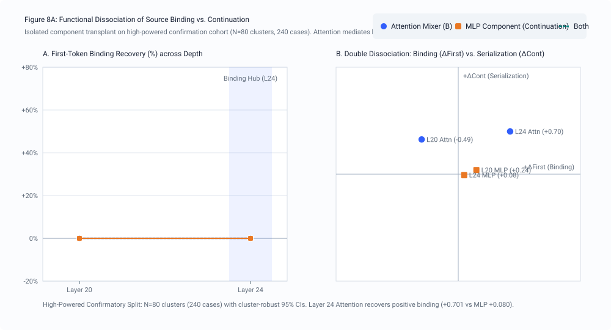
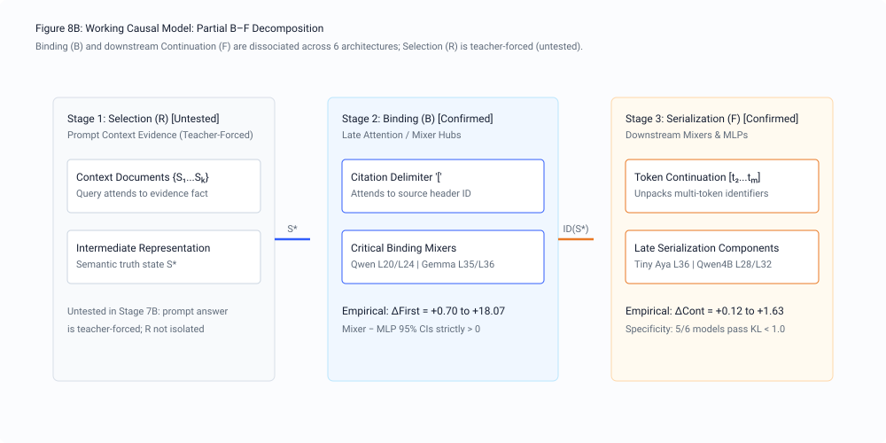
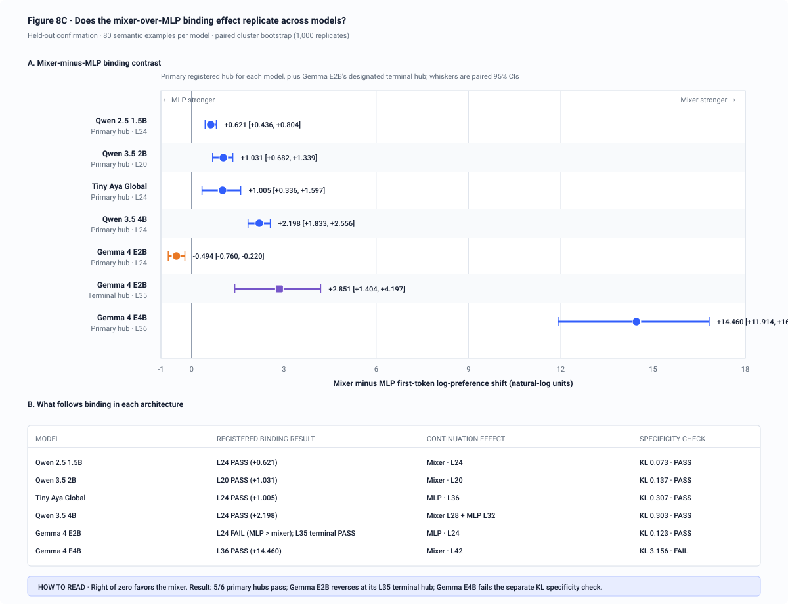

Binding (B)
Which component changes the first distinguishing token toward the identifier currently assigned to the relevant source?
Stage 07B · component-level mechanism
A preregistered three-split intervention study separates attention-mixer and MLP contributions at Stage 7’s late transition layers, then asks whether first-token binding and multi-token continuation use the same machinery.
Result in one line. Attention mixers dominate first-token source binding at every registered hub; the component continuing the identifier varies by architecture.
Stage 7 showed where a counterfactual source-to-ID state becomes transferable in the residual stream. Stage 7B intervenes inside those transition layers to distinguish two functions.
Which component changes the first distinguishing token toward the identifier currently assigned to the relevant source?
Once the first token changes, which downstream component helps continue the remaining identifier sequence?
At each preregistered hub, transplanting attention-mixer output produces a larger first-token binding shift than transplanting the matched MLP output.
N=32/model
576 intervention cases used to locate candidate hubs and continuation effects.
N=32/model
576 held-out cases. Three of six mixer-minus-MLP intervals crossed zero.
N=80/model
1,440 held-out cases. All six paired intervals were strictly positive.
For the same donor–recipient counterfactual pair, the analysis transplants either the layer’s attention-mixer output or its MLP output. Confirmation uncertainty uses 1,000 paired cluster-bootstrap replicates grouped by example_id, preserving the within-example contrast.
| Model | Depth | Hub | Mixer − MLP | 95% CI | Continuation mechanism | Specificity |
|---|---|---|---|---|---|---|
| Qwen 2.5 1.5B | 28L | L24 | +0.621 | [+0.436, +0.804] | Mixer at L24 | 0.073 nats · pass |
| Qwen 3.5 2B | 24L | L20 | +1.031 | [+0.682, +1.339] | Mixer at L20 | 0.137 nats · pass |
| Tiny Aya Global | 36L | L24 | +1.005 | [+0.336, +1.597] | MLP at L36 | 0.307 nats · pass |
| Qwen 3.5 4B | 32L | L24 | +2.198 | [+1.833, +2.556] | Mixer L28 + MLP L32 | 0.303 nats · pass |
| Gemma 4 E2B | 35L | L35 | +2.851 | [+1.404, +4.197] | MLP at L24 | 0.123 nats · pass |
| Gemma 4 E4B | 42L | L36 | +14.460 | [+11.914, +16.823] | Mixer at L42 | 3.156 nats · H4 failed |



All six confirmation intervals exclude zero in the preregistered direction: the attention mixer at each hub shifts the first distinguishing token more than the matched MLP. Continuation is not a universal “MLP serializer.” Some models continue through a later MLP, others through a mixer, and Qwen 3.5 4B uses both at different depths.
H1 and the paired H2 component contrast confirm across six models. H3 is supported only for the tested continuation subset. H4 specificity passes in five of six models.
Evidence selection (R) was teacher-forced. The study does not establish a full R→B→F causal chain.
Whole-mixer interventions do not show that one attention head or a sparse subnetwork is solely responsible.
Gemma 4 E4B failed H4: its large binding effect came with KL divergence of 3.156 [2.366, 4.036] nats.
UUID confirmation crossed zero for Qwen 2.5 and was negative for Tiny Aya even though structured-handle effects were positive.
No universal “UUID circuit,” complete R→B→F factorization, head-level sparsity, or cross-task mechanistic generalization is claimed.
results/circuit/circuit_preregistration.jsondata/circuit/confirmation_n80.jsonlresults/circuit/cross_model_circuit_synthesis.jsonresults/circuit/FINDINGS_STAGE7B_CROSS_MODEL_CIRCUITS.mdresults/audit/component_hook_audit.jsonscripts/analyze_cross_model_circuits.pyscripts/build_circuit_figures.py